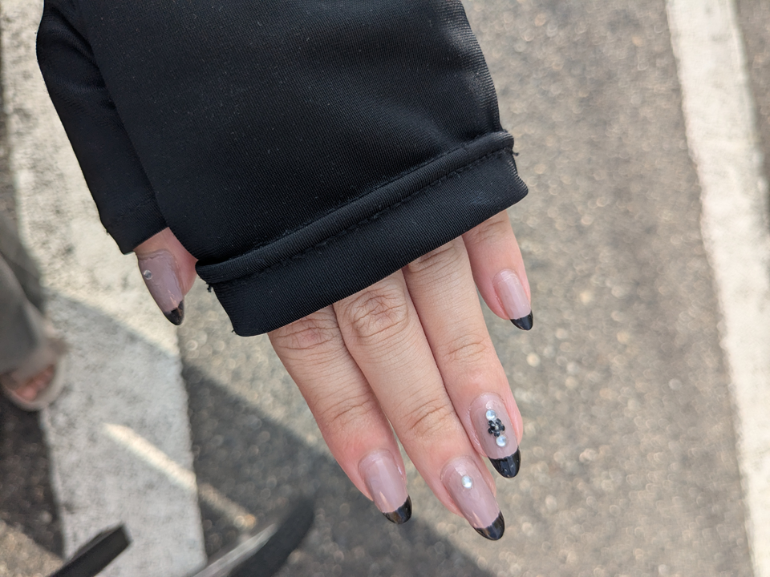
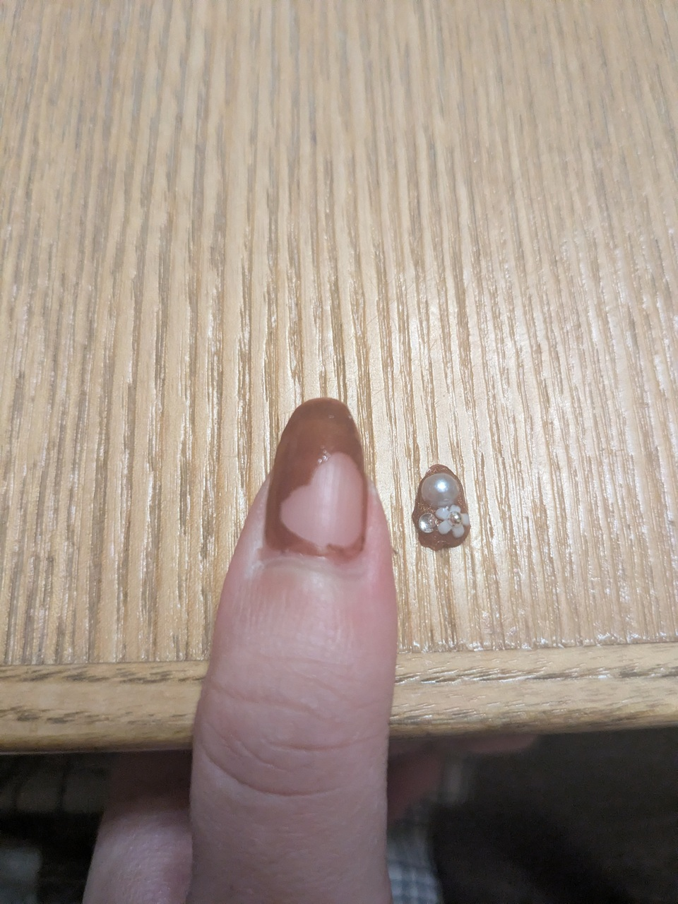
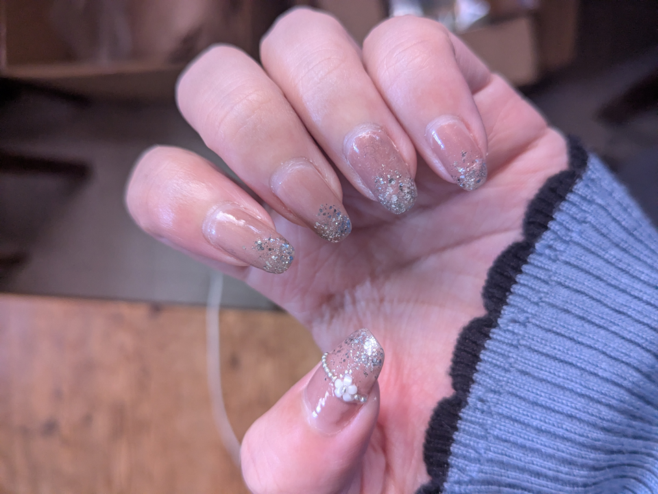
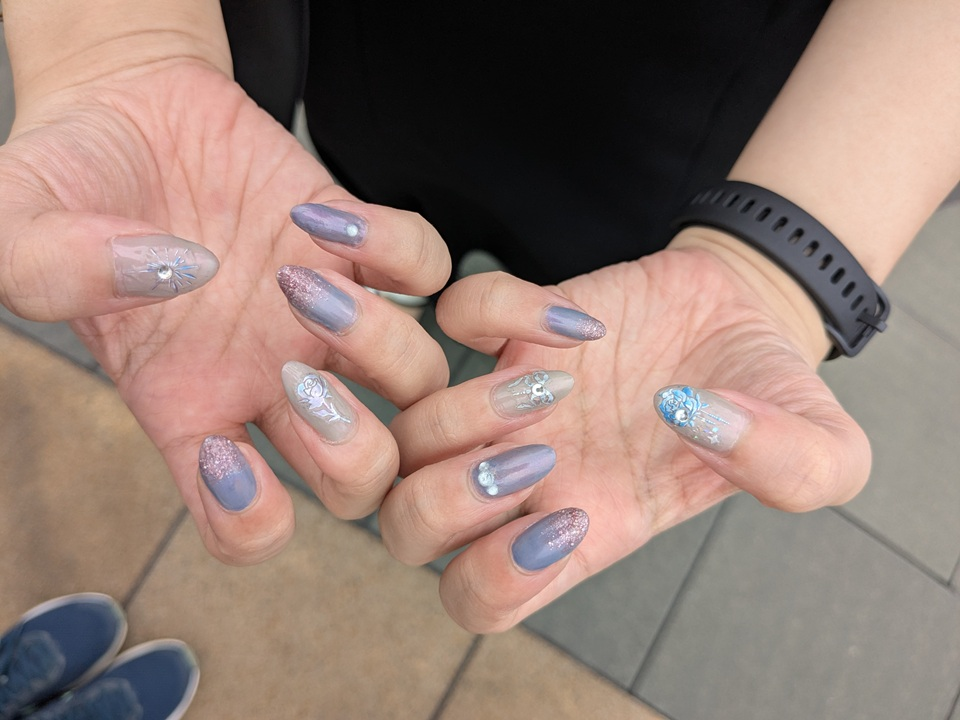

失敗・ハプニング
失敗したネイルや、ミス、改善点を載せます。
フレンチネイル

フレンチのラインがガタガタになりました。
フレンチ補助シールをもっと爪にしっかり貼らないといけなかったです。
アイシングジェル

ジェルのつけ方が甘かったです。一週間程度でパーツだけとれました。
ラメグラデーション

写真ではわかりづらいですが、先端にラメを塗りすぎて先端が少しもりあがってしまいました。
もう少しラメの密度の高いものでするべきでした。
ネイルシール

ネイルシールをつける位置が先端すぎたり、皺になったりであまり長持ちしませんでした。